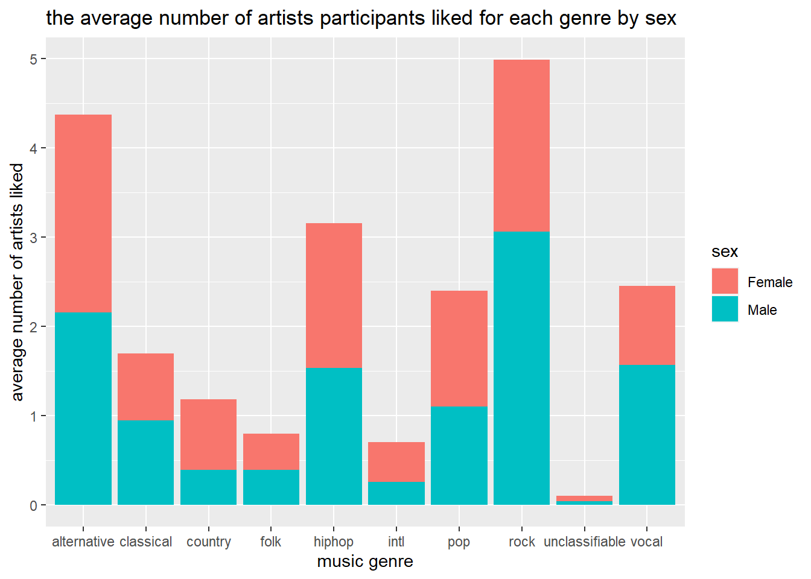
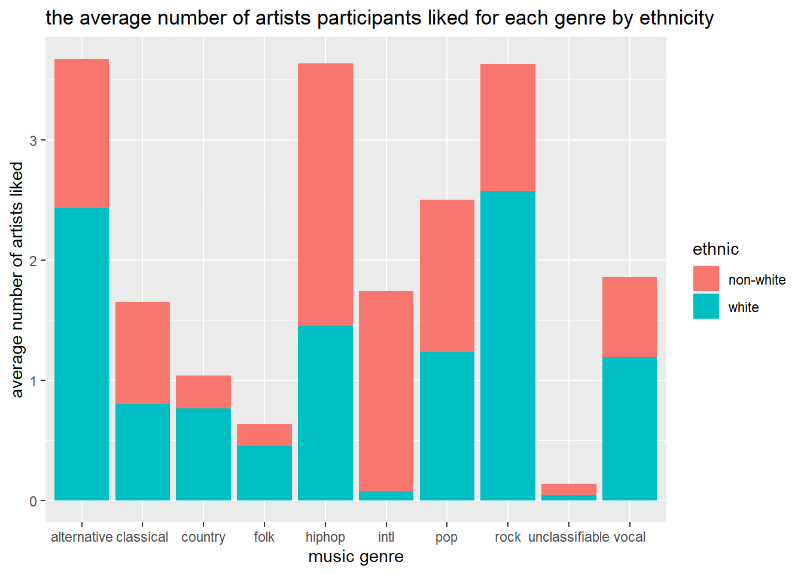

show the code
library(tidyverse)
library(ggplot2)library(tidyverse)
library(ggplot2)hiphop_unclean <- read_csv(here::here("Week 3",
"Lab3",
"hiphop.csv"
)
)Rows: 10752 Columns: 38
── Column specification ────────────────────────────────────────────────────────
Delimiter: ","
chr (4): word, subj, sex, ethnic
dbl (34): age, city, county, intl, vocal, classical, folk, rock, country, po...
ℹ Use `spec()` to retrieve the full column specification for this data.
ℹ Specify the column types or set `show_col_types = FALSE` to quiet this message.Let us instead compare the number of artists participants reported liking for each genre. Specifically, you will determine which music genre most differentiates each of the demographic groups provided. That is, which genre had much higher average (mean or median) reported artists in one group than the other.
Hint: You might find it helpful to first create a new dataset with only the variables you are interested in!
Male versus Female
artists_distinct <- hiphop_unclean |>
select(subj:unclassifiable) |>
distinct(subj,.keep_all = TRUE)
artist_by_sex <- artists_distinct |>
group_by(sex) |>
summarise(across(.cols = `intl`:`unclassifiable`,
.fns = mean,
na.rm = TRUE
)
) |>
pivot_longer(cols = `intl`:`unclassifiable`,
names_to = "genre",
values_to = "genre_mean"
)
ggplot(data = artist_by_sex,
mapping = aes(x = genre,
y = genre_mean,
fill = sex
)
) +
geom_bar(stat = "identity") +
labs(x = "music genre",
y= "average number of artists liked",
title = "the average number of artists participants liked for each genre by sex "
)
Based on the figure showing the difference in the average number of artists liked by sex. The largest differences are in the pop, rock, international hip hop, country, classical and alternative categories. In these categories the average number of artists liked is higher for memales than males. And in every music genre females on average like more artists per genre than males.
White versus Non-White
artist_by_ethnic <- artists_distinct |>
mutate(ethnic =
if_else( ethnic != "white",
"non-white",
"white"
)
) |>
group_by(ethnic) |>
summarise(across(.cols = `intl`:`unclassifiable`,
.fns = mean,na.rm = TRUE
)
) |>
pivot_longer(cols = `intl`:`unclassifiable`,
names_to = "genre",
values_to = "genre_mean"
)
ggplot(data = artist_by_ethnic,
mapping = aes(x = genre,
y = genre_mean,
fill = ethnic
)
) +
geom_bar(stat = "identity") +
labs(x = "music genre",
y = "average number of artists liked",
title = "the average number of artists participants liked for each genre by ethnicity"
)
Based on the figure showing the difference in the average number of artists liked by ethnicity. The largest differences are in the international, pop, vocal, rock, hip hop, and alternative categories. In these categories the average number of artists liked is higher for non-white ethnicity than white ethnicity. And in every music genre people with non-white ethnicity on average like more artists than people that have white ethnicity.
Based on the design of this study and its context (African American English), what are at least two concerns you have?
Based on the design of this study, I am concerned with the fact that African Americans are being filtered out of the survey on African American English. Not only is it racist, but it creates inaccurate data because a significant proportion of the population that speaks English is not represented in the data set. Additionally, I think it is illogical to make any conclusions based on the data because it is a small data set and it is not enough data to generalize to entire ethnicity.
Revision: After reading the submission comments, I realized that I need to stop putting message = FALSE inside the curly brackets. While this is a simple fix, I need to make sure I don’t make that mistake again. Another mistake I made in my quarto document was using color and instead of the fill option. Color only recolored the outside of my histogram boxes while the fill option fills in the histogram. After making the adjustment, It made my histogram a lot easier to read and made it more visually pleasing. Additionally, on my original submission I did not summarize and make conclusions based on the data set. Even though the data is not survey was not ethical and accurate, I still found an interesting result and need to formalize that result in words. On future assignments, I need to make sure to summarize my graphical results in words. From this flawed data set, I found that on average women listen to more musical artists than men across all genres in this study. And people who’s ethnicity is non-white on average listen to more artists than people who are ethnicity is white across all genres in this study.